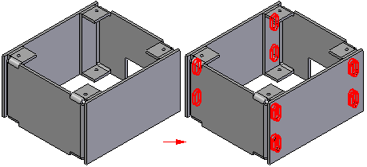
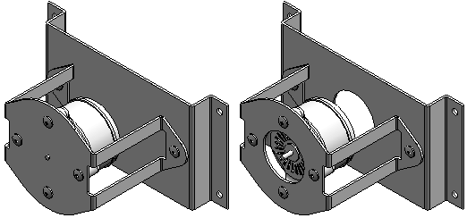
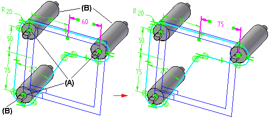
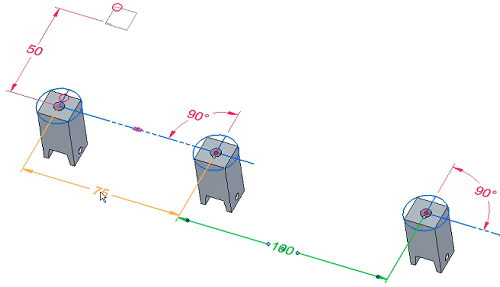
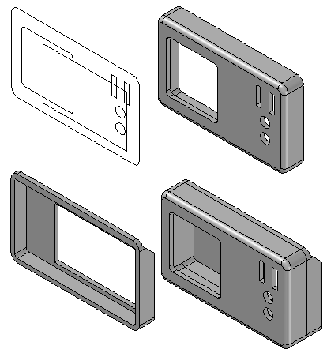
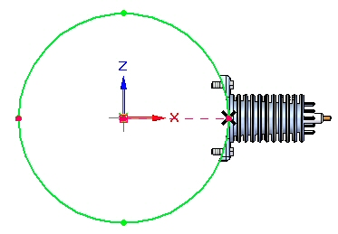
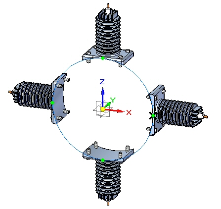

Using assembly sketches
Assembly sketches are powerful tools. You can create sketches in an assembly that affect the assembly as a whole, and you can create sketches in the parts and subassemblies used in an assembly by editing them in-place. Here are some examples of how you can use assembly sketches.
- Create assembly features.
-
In some assemblies, you may want to construct a single feature that modifies more than one part.
Example:This pattern of cutouts may extend through several parts.

In other cases, you may want to construct a feature within the context of the assembly, rather than in the part or sheet metal document.
Note:For more information, see the help topic, Assembly features.
- Create 3D ordered geometry (part features) within parts.
-
Part features are the same as features created using in-place activation within the assembly. Part features reside in the part document and become ordered features. The feature is not linked and is not associative.
Example:
When you select the Create Part Features option, the feature affects all parts with the same document name as the selected parts. This option is useful when you want to globally modify one or more parts while working in the assembly.
- Create an assembly layout sketch.
-
-
You can arrange equipment on a floor plan in large assemblies.
Example:You can use connect relationships (A) to position roller parts (B) relative to an assembly sketch.
In this example the value of the 60 millimeter dimension was edited in the assembly sketch to 75 millimeters. Because the roller part was constrained to the assembly sketch using a 2D connect relationship, the position of the roller updated when the sketch dimension was edited.

-
You can reference and position components defined as blocks.

With the Select From and Select To steps in the Duplicate Component command , you can select a block in an assembly or subassembly sketch, which is then matched to the orientation of the components.
-
- Create parts in an assembly using assembly layout sketches.
-
Example:

- Create an assembly pattern from an assembly layout sketch.
-
Example:


For more information about how you can use assembly sketches to create and position parts and subassemblies, see Using assembly sketches.